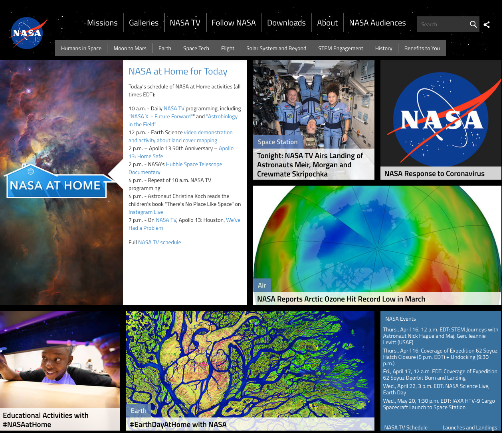
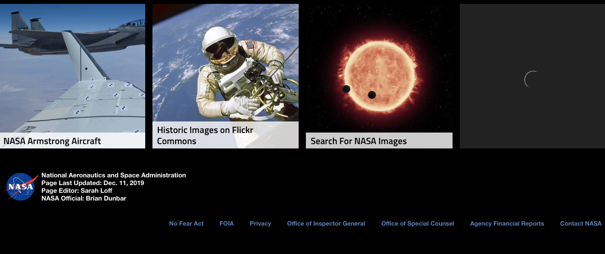
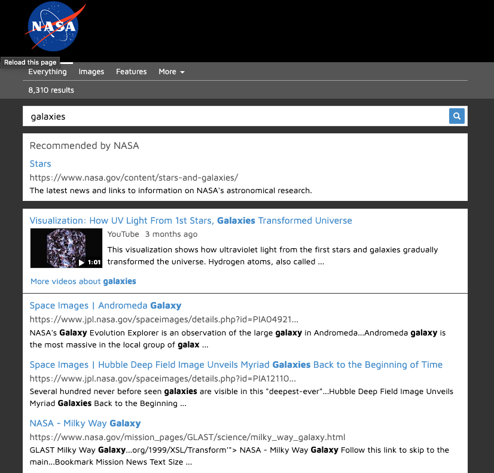
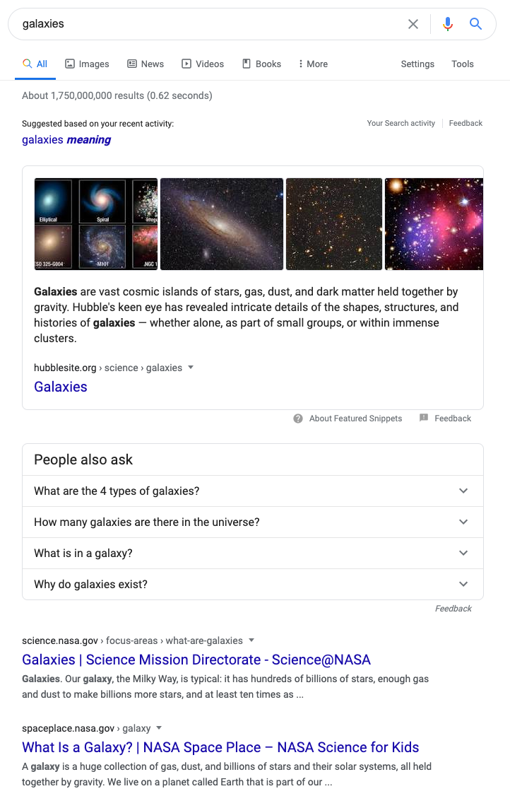

For this post, I will be reviewing a few nitpicks that bothered me while exploring the NASA.gov website from my computer.
We have been learning more on the topic of usability, and I really enjoy the book "Don't Make Me Think" by Steve Krug. Diving right in, if you're on the NASA Home page, it seems very overwhelming. This is one hundred percent making thoughts of confusion appear for me. It is a scrolling tile / Pinterest type feed homepage. Not really my thoughts when I think NASA. But, again, this is just a nitpick.
Screen Shot Home Page:
Moving forward, I wanted to look for a photo of a galaxy in space, where do I go for that? And in regards to another one of Krug's guidelines of:
"We don't read pages, we scan them."- Krug
That idea shows to be relevant when I was scanning for images of galaxies in space.
From the home page:
- They have a dropdown for "Galleries," I am assuming that is going to have an "Image Gallary." Lucky I was right. Furthermore, once in image galleries, you then needed to find the tile that was titled "search for NASA Images" and go then to a whole new page. That seems a bit much to get to a search going for Galaxies in the first place.
- In my opinion if one is going to have a search bar for the images in their database or whatever. That should be a link right off the main page or on the main page itself, possibly. Currently just felt all in all like too many "clicks". Also, that tile is almost in the footer of the image galleries page, which seems a bit odd.
Screen Shot of the bottom of the Image Gallaries page:
Also, the main search component is more of a google type search. Not a search internal to just the NASA website. But, when you do use this search, eventually, you come around to see that there is an "image tab." Resulting in all sorts of high-quality images of galaxies. So, I think that ties into another Krug guideline of:
"If you can't make something self-evident, you at least need to make it self-explanatory." - Krug
The searching for the image is self-explanatory. But, I would not say the most optimal.
Screen Shot of the search page:
Lastly, from Steve Krug "Am I presented with clear, easily understandable choices," in my opinion I think that the articles that are provided are great, but, if I search for galaxies my opinion of the most optimal view to give back, the user would be similar to what google.com would return you.
Screen Shot from Goggle.com search for Galaxies:
